OverviewWhy a smarter fridge
A large share of fruit and vegetables is lost after harvest, simply because nobody notices conditions drifting or the first item starting to rot. GreenVault is a storage unit that keeps watching for you.
Inside the box, an ESP8266 reads temperature, humidity and gas levels and streams them to a Firebase real-time database. A Raspberry Pi 4 with a Pi Camera runs a YOLOv8 model that classifies five crops as healthy or rotten. A companion Android app shows the live readings, triggers a spoilage check for a chosen crop and sets the cooling temperature. The unit charges from a solar panel and the enclosure parts are printed in biodegradable TPU, so it can run on small farms with a weak grid.
PROBLEMWhat goes wrong today
- Perishable produce spoils fast without continuous monitoring.
- Manual checks miss the early signs, like rising ethylene and methane from rotting food.
- No affordable system combines IoT sensing with camera-based spoilage detection.
- Cold storage depends on the grid, which rural farms often lack.
APPROACHWhat GreenVault does
- Senses temperature, humidity and gas around the clock.
- Detects rotten produce with on-device YOLOv8 inference.
- Puts live data, alerts and cooling control in a mobile app.
- Runs from a solar-charged Li-ion pack and uses biodegradable TPU.
System pipelineFrom sensor to phone
Sense
An ESP8266 NodeMCU reads the DHT11 (temperature and humidity) and the MQ-135 gas sensor, which reacts to the ethylene and methane given off by rotting food.
Sync
Readings are pushed to Firebase Realtime Database over Wi-Fi. A 16×2 I²C LCD on the lid cycles through temperature, humidity and gas.
Inspect
When the user taps a crop in the app, a flag is set in Firebase. The Raspberry Pi polls those flags, captures a photo with the Pi Camera, resizes it to 640×640 and runs YOLOv8.
Report
The Pi writes 1 (healthy) or 0 (rotten) back to the crop’s result field; the app shows the verdict and the field resets after five seconds.
Cool
The app sets the target temperature. Below 20 °C a relay switches on the additional Peltier cooling unit with its two DC fans.
Power
A solar panel feeds an XL6009 boost converter and a TP4056 charger that keeps two 18650 Li-ion cells topped up.
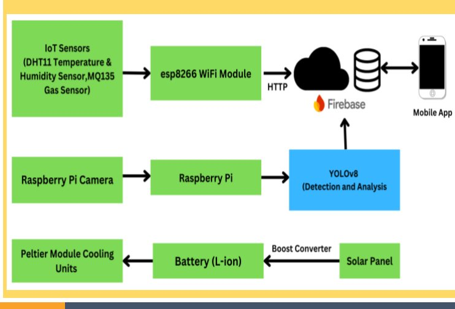
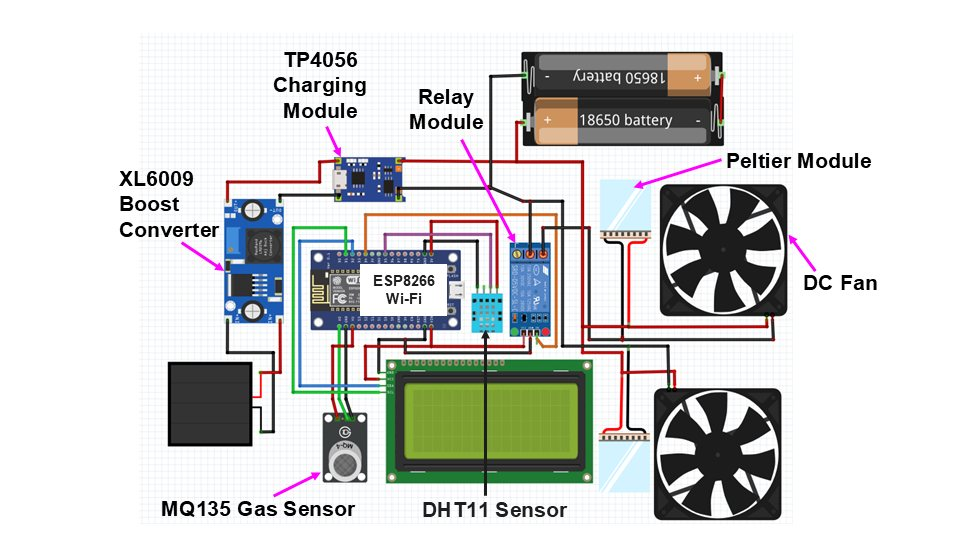
HardwareWhat is inside the box
| Block | Component | Job |
|---|---|---|
| Microcontroller | ESP8266 NodeMCU | Reads sensors, drives LCD and relay, talks to Firebase |
| Climate sensing | DHT11 | Temperature and relative humidity |
| Gas sensing | MQ-135 | Ethylene and methane from decaying produce |
| Vision | Raspberry Pi 4B + Pi Camera | Image capture and YOLOv8 inference on the edge |
| Cooling | Peltier modules + DC fans, relay | Extra cooling below the 20 °C set-point |
| Display | 16×2 I²C LCD | Rotating live readings on the unit |
| Power | Solar panel, XL6009 boost, TP4056, 2× 18650 | Off-grid charging and storage |
| Enclosure | Biodegradable TPU parts | A lower-impact build than standard plastics |
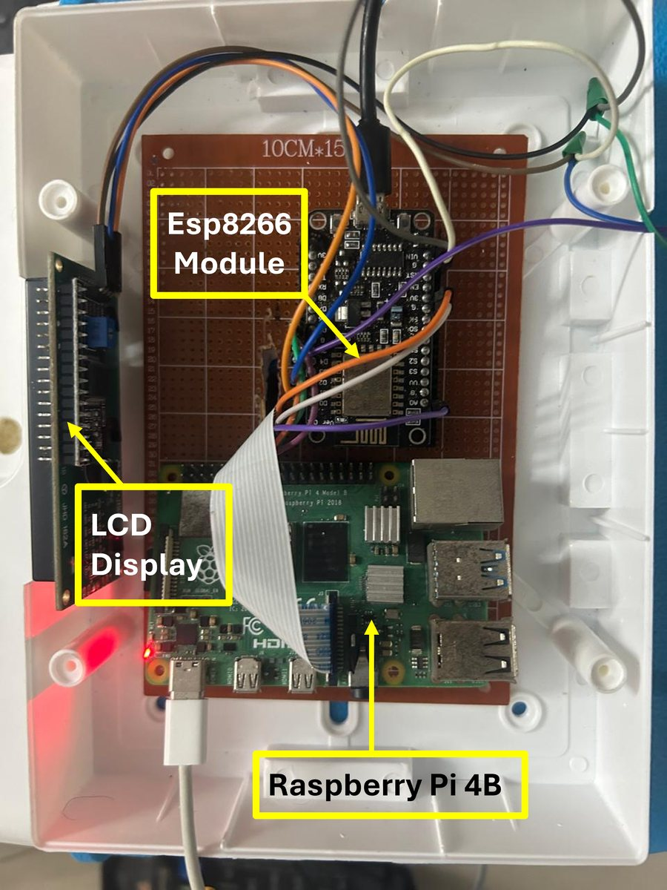
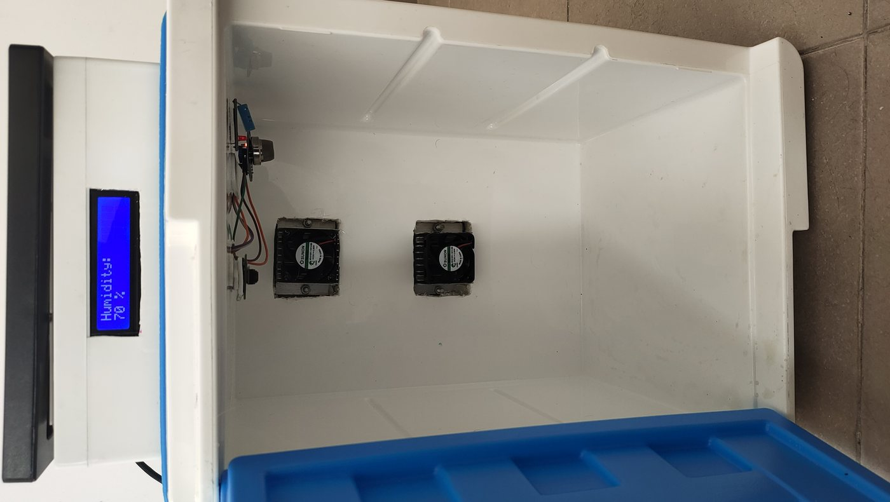
YOLOv8 spoilage detectionTeaching it to spot rot
The model is a YOLOv8 detector trained on ten classes: cucumber, eggplant, grapes, spinach and tomato, each as healthy or rotten. The dataset holds 5,109 labelled images, split into 4,555 for training, 362 for validation and 192 for testing. Training ran for 50 epochs, and the best weights run directly on the Raspberry Pi.
On the Pi, the logged runs show about 24 ms of preprocessing per 800-pixel frame before inference. Only a prediction whose crop matches the requested tag is written back, so a tomato check cannot be answered with a cucumber detection.
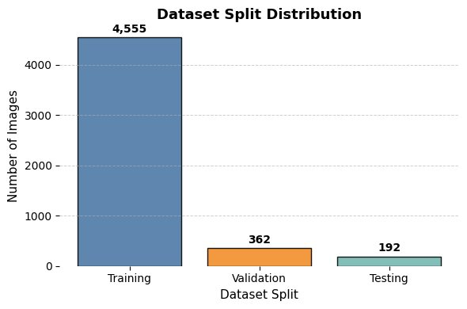
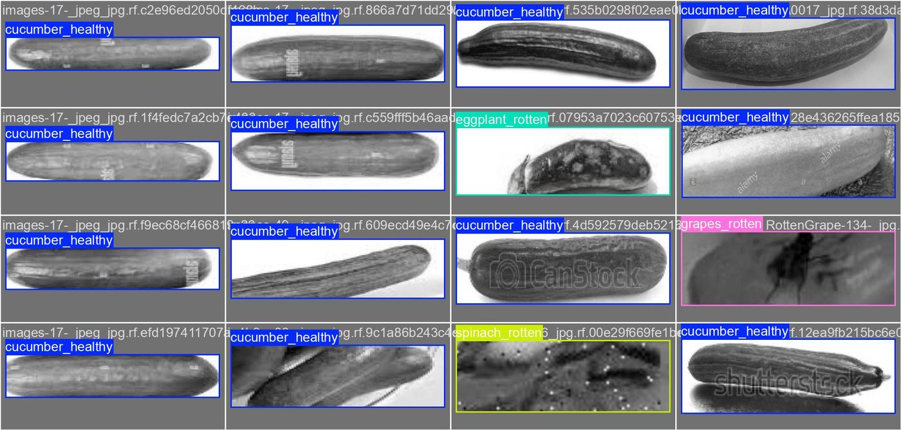
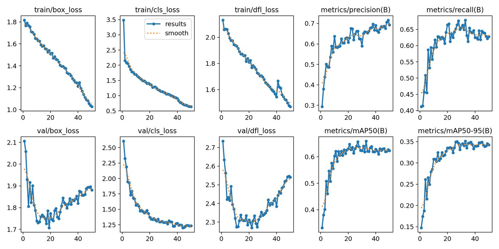
On the normalized confusion matrix, both tomato classes reach 1.00, and healthy cucumber and spinach score 0.86 and 0.85. Rotten cucumber and rotten spinach are the hardest classes because they are often mistaken for background, which makes them the target for the next round of data collection.
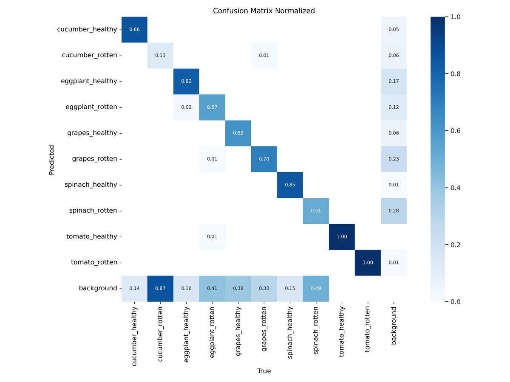
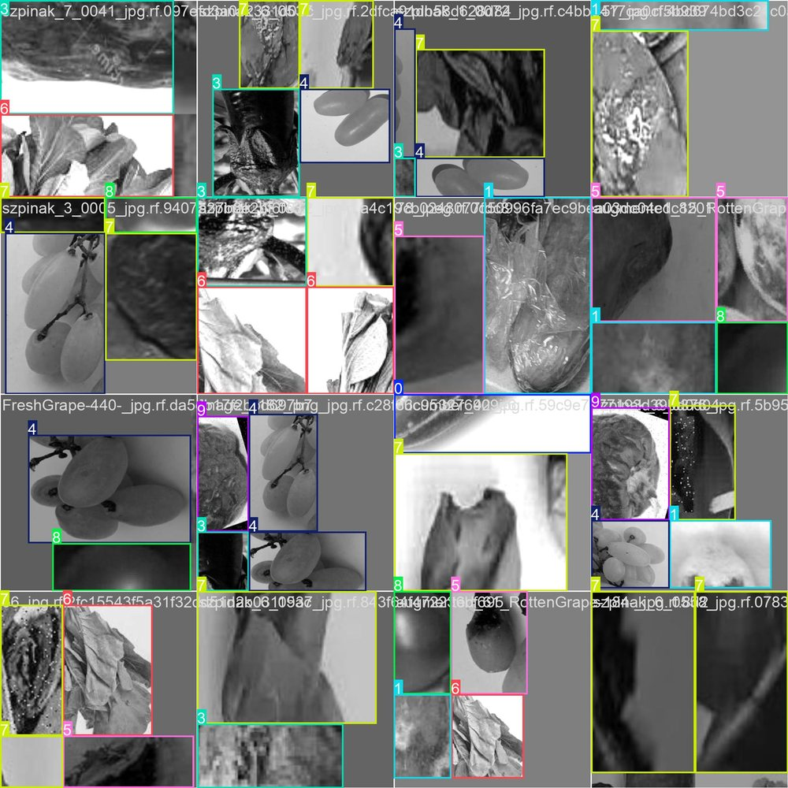
Companion appControl from anywhere
The Android app, built with MIT App Inventor, reads and writes the same Firebase database as the hardware. It shows temperature, humidity and gas levels live, lets the user set the cooling temperature, and has a spoilage-detection screen with one button per crop.
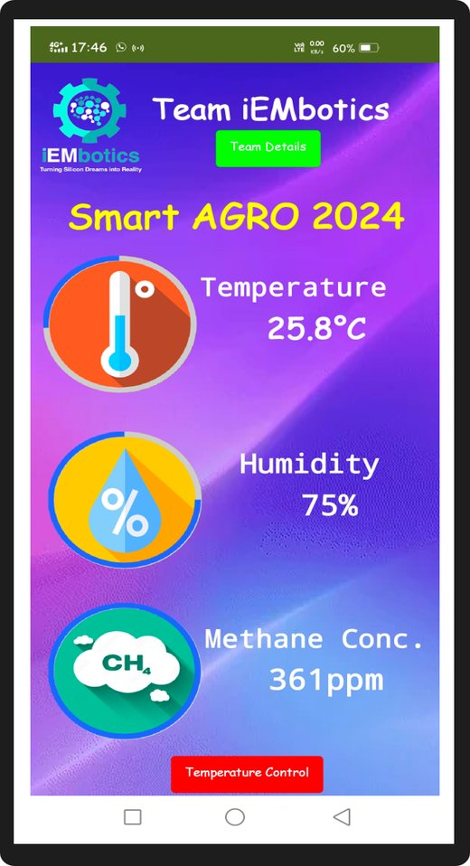
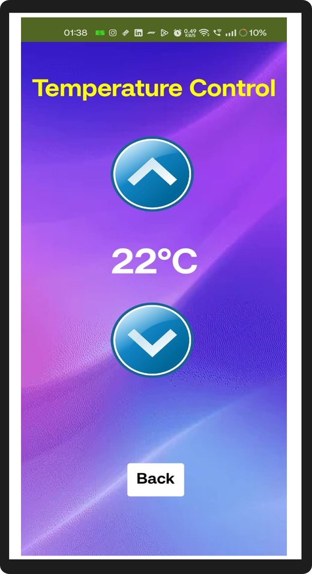
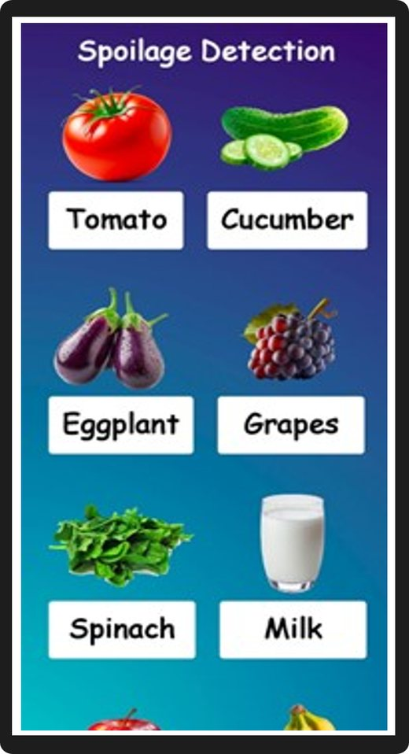
RecognitionHackathon win and poster
Team iEMbotics won first prize (₹12,000) at the Smart Agro Storage Hackathon for Engineers Day 2024, organised by the Department of Mechanical Engineering at SRMIST with the Institution of Engineers (India), Kattankulathur Local Centre, on 17 September 2024.
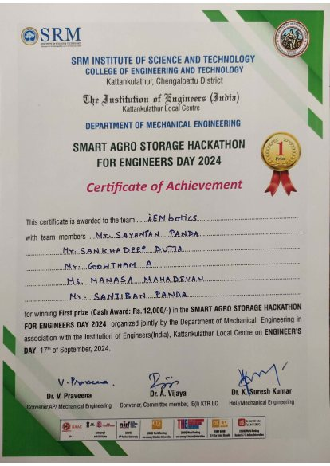
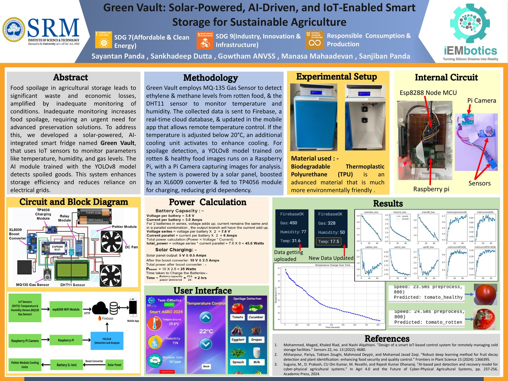
Intellectual propertyProtected as an invention
A Storage System For Agricultural Produce And A Method Thereof
- Application no.
- 202541019684
- Filing date
- 05/03/2025
- Publication no.
- 12/2025
- Publication date
- 21/03/2025